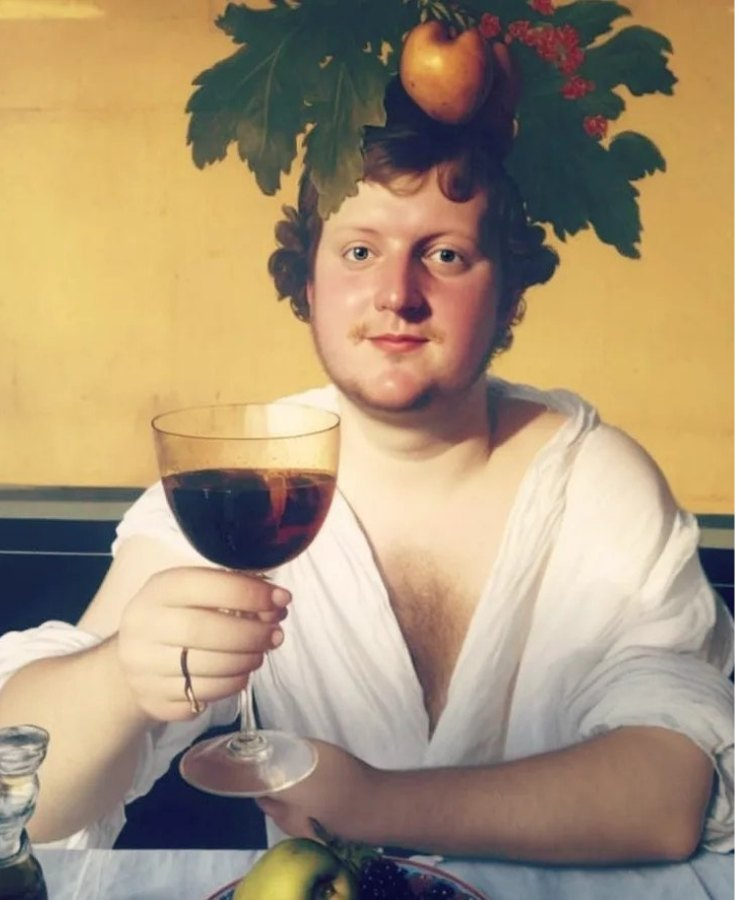

Jij zorgt voor zes tot tien vrienden en een tafel. Wij komen langs met de flessen, de glazen en de uitleg. Een vlugge optelsom: een leuke avond staat jou te wachten.

Jullie kiezen eerst tussen rode of witte wijn. Daarna doen jullie onze korte vragenlijst, de ondertussen befaamde SommelAI. Die peilt naar jullie smaakvoorkeuren.
Op basis van de resultaten kiezen we twee druivensoorten die bij de groep passen. Jullie prikken een datum, wij kopen zes tot acht flessen van die twee druiven.
Proeftechnieken, de kenmerken van elke druif, foodpairing: het komt allemaal aan bod. En de flessen blijven na afloop gewoon op tafel staan.
De prijs hangt af van het aantal deelnemers en flessen, maar meestal komen we uit op zo'n 200 euro. Is dat niet ongeveer 20 euro per persoon? Ja hoor. Niet slecht voor een verantwoord drinkgelag.
Wil je meer weten of heb je persoonlijke wensen? Blinde proeverij, een cadeaubon, een teambuilding, natuur- of biowijn? Laat het ons weten.
Waar komen we? Overal in Gent en de deelgemeenten, en daarbuiten in een straal van zo'n dertig kilometer: Merelbeke, Destelbergen, Lochristi, Evergem, Deinze, De Pinte, Sint-Martens-Latem, Wetteren, Zelzate, Aalter en omstreken. Twijfel je? Vraag het gewoon.
Wine tasting at home in Ghent: we also host in English. Same wines, same fun, slightly worse jokes.
Beantwoord een dozijn vragen van SommelAI, onze trouwe robotwijnkenner. Hij vertelt je welke druivensoort het beste bij jouw smaak past.
Enorm gezellige avond gehad én veel bijgeleerd ook, top combo! Aanrader!Anouck D. · op Google
Echt zeer aanrader! We vroegen voor natuur- en biowijn en hij heeft zich daar helemaal naar aangepast.Heleen C. · op Google
Geweldige ervaring! Super leuk concept en kwalitatief hoogstaande wijntjes.Glenn V. · op Google
Het was een leerrijke, interessante avond! We hebben ons super hard geamuseerd. Merci!Celine V. · op Google
Heel gezellig en leerrijk en lekker tegelijk! Topavond.Siel V. · op Google